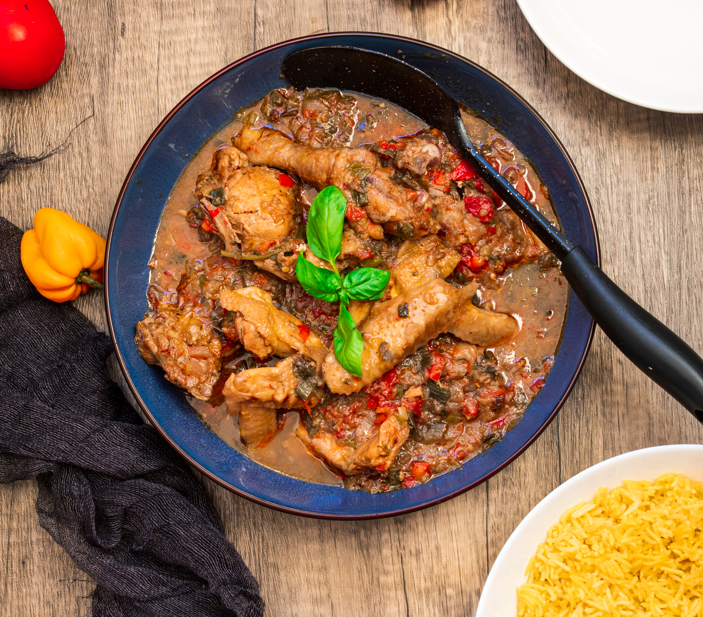
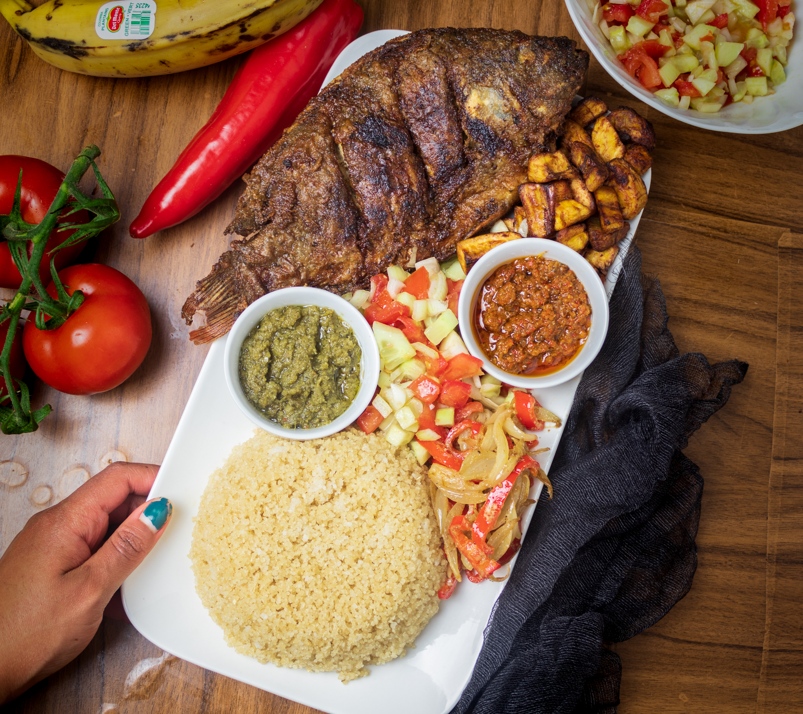
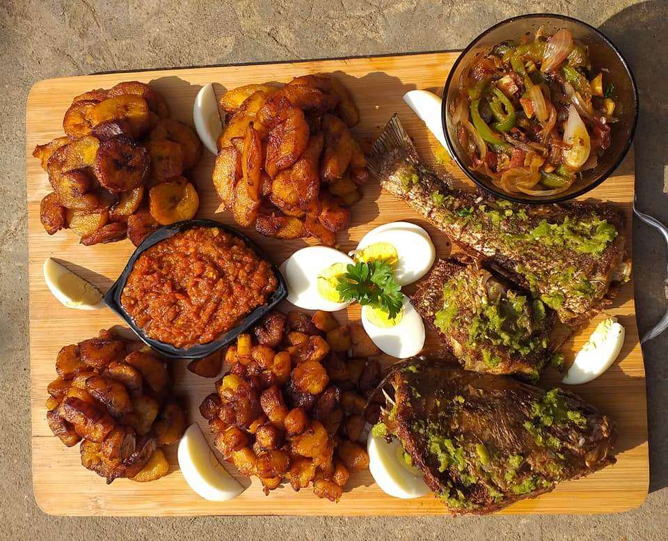
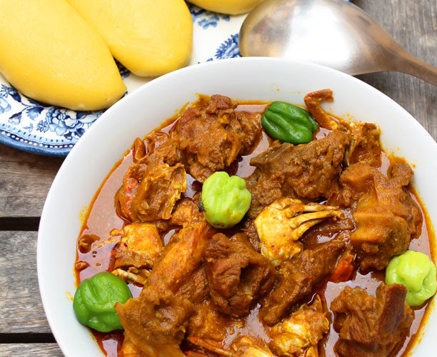

Bienvenue sur ivoire-food, votre site dédié à l'art culinaire ivoirien
Découvrez et partagez l'authenticité des saveurs exquises de la cuisine ivoirienne.
Les plats préférés du peuple ivoirien

Poulet kedjenou

Attiéké Poisson

Alloco

Foutou sauce graine
Recettes
Les recettes revêtent une importance fondamentale en cuisine, allant bien au-delà de simples instructions pour la préparation des repas. Elles incarnent des héritages familiaux, des témoignages culturels et des formes d'expression artistique. Ces guides culinaires ne se limitent pas à indiquer les étapes de cuisson ; ils sont également des porteurs d'histoires, reflétant l'identité et l'histoire d'une communauté à travers ses saveurs distinctes. Les recettes favorisent la créativité en offrant une base sur laquelle les cuisiniers peuvent improviser, tout en préservant l'essence authentique de chaque cuisine. Au-delà de la simple préparation de repas, les recettes renforcent les liens sociaux et familiaux, créant des moments de partage et de convivialité autour de la table. En somme, ces guides culinaires sont essentiels pour préserver la diversité gastronomique, liant les individus à leur patrimoine tout en inspirant de nouvelles explorations culinaires.
Meilleurs Resto
Les restaurants ivoiriens offrent une expérience culinaire riche et diversifiée, capturant les saveurs authentiques de la gastronomie ivoirienne. Ces établissements sont des joyaux gastronomiques où les convives peuvent se délecter des délices de la cuisine ivoirienne, réputée pour son mélange subtil d'épices, d'herbes fraîches et de techniques de cuisson traditionnelles. Des plats emblématiques tels que le fameux attiéké avec poisson braisé, le délicieux foutou banane avec sauce graine, ou encore le succulent aloko, des bananes plantains frites, sont autant de trésors gustatifs à découvrir. Les restaurants ivoiriens créent une atmosphère chaleureuse, souvent imprégnée de musique et de convivialité, offrant ainsi une expérience gastronomique qui va au-delà de la simple dégustation, transportant les convives dans un voyage authentique au cœur de la culture ivoirienne.